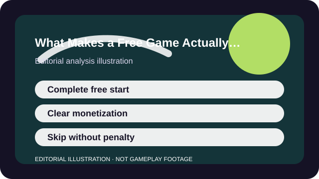

WHY THIS MATTERS
A free game earns trust when access is generous, monetization is legible, and the best loop still works when you spend nothing.
The word free is descriptive but incomplete. A truly player-friendly free game does not only cost zero at the download button; it also explains what money changes, keeps the core loop enjoyable before payment, and lets you step away without feeling trapped by the next event timer.
That is why two free games can feel completely different in practice. One uses optional cosmetics around a satisfying loop. Another uses free access mainly as the door into a store you must understand immediately. Player-friendly design is the difference.

ANALYSIS
A good free game still makes a complete first promise
The first sessions should already show why the game is worth your time. Fortnite, Rocket League, Brawlhalla, and many Roblox experiences succeed here because the core loop is visible before you spend.
A weaker free design hides the real game behind grind walls, unclear unlock pressure, or an onboarding path so thin that you cannot tell what you would actually be investing in.
ANALYSIS
Player-friendly monetization is legible
Free games become risky when you cannot quickly tell whether money buys cosmetics, convenience, access, or competitive advantage. Clarity matters even when you personally plan not to spend.
Genshin Impact shows why discipline and banner clarity matter. Warframe shows how convenience pressure can still be manageable if the underlying game is generous enough. The key question is always the same: what changes when money enters the picture, and is that change easy to understand?
ANALYSIS
Respect for breaks is part of fairness
A game that punishes absence too hard stops feeling generous even if the first download was free. Players need room to skip a season, miss a weekend, or return after a break without feeling that the game resents them.
Catch-up systems, evergreen content, and a playable core loop matter more than constant urgency. If the whole model relies on making you afraid to miss one week, the free access may be less friendly than it looks.
ANALYSIS
Safety and spending tools belong in the conversation
Parental controls, purchase friction, and clear account settings are not side topics. They are part of whether the game respects the player enough to make consent and boundaries possible.
This matters most in games with children, social spaces, or randomized spending. A generous game should still be judged on how responsibly it handles those surrounding systems.
TAKEAWAYS
The practical shortlist
- Free access is meaningful only if the core loop is enjoyable before spending.
- You should be able to explain exactly what money changes in the game.
- A player-friendly free game does not punish breaks so hard that logging out feels expensive.
- Safety tools and purchase friction are part of fairness, not separate from it.
The most trustworthy free games are not the ones that cost the least money in theory. They are the ones that make the tradeoffs easiest to understand and the core experience easiest to enjoy without pressure.
SOURCES AND LIMITS
What this analysis leans on
- Player-friendly design can still feel different across regions, platforms, and age groups.
- Live-service monetization and catch-up systems can change faster than evergreen design fundamentals.
- This article evaluates fairness as a player decision, not as a legal or regulatory judgment.
This article is an editorial analysis, not a substitute for current store terms, patch notes, or support pages. Use the links above when the live fact itself is the thing you need.